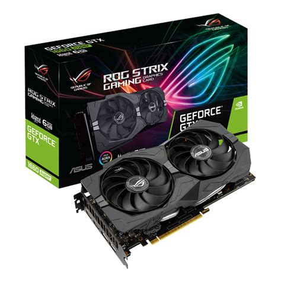
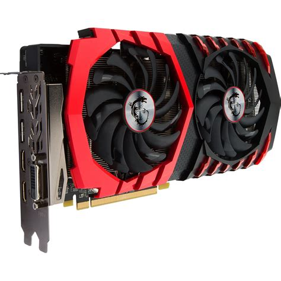

NVidia 1660

Esta tarjeta esta desarrollada por GeForce y tiene 6 GB de RAM integrados destinados exclusivamente a los graficos y tiene dos ventiladores para la refrigeración, es una tarjeta grafica de gama media perfecta para ordenadores de gama media-alta
Radeon 6800

La RX 6800 es una tarjeta grafica de alta gama, tiene una memoria integrada de 16 GB, tiene un sistema de refrigeracion avanzado y unas altas prestaciones, pero para poder utilizar la grafica correctamente es necesaria una fuente de alimentación de al menos 750W